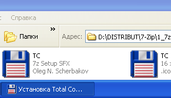
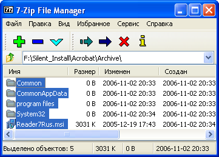
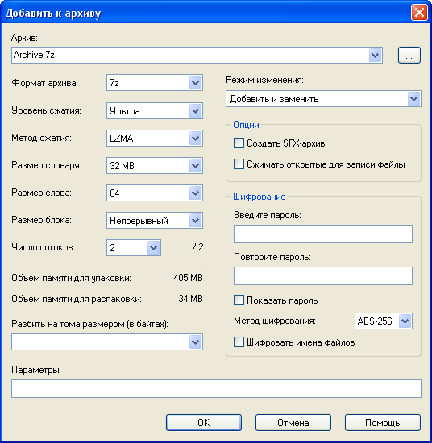
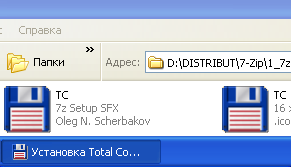
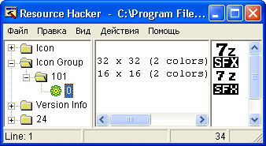
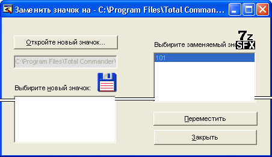
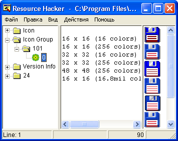
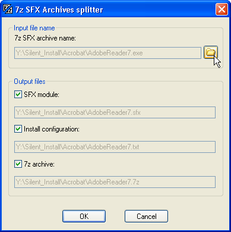
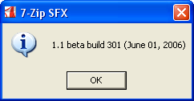

Все больше пользователей выбирают для установки приложений самораспаковывающиеся архивы (далее "SFX архивы"), а в качестве архиватора предпочитают использовать архиватор 7-Zip. Это бесплатный архиватор, распространяющийся по лицензии GNU LGPL. Если вы с ним не знакомы, то более подробную информацию сможете найти на сайте 7-zip. Его отличает более высокая степень сжатия, а с модифицированным SFX модулем доступны абсолютно незаметная (silent) установка, возможность распаковки файлов в заданную папку, добавление ярлыков в меню Пуск и на рабочий стол, а также многие другие функции.
Область применения SFX архивов не ограничивается приложениями, не требующими установки. Можно без проблем упаковать приложение, запакованное одним из распространенных инсталляторов и сконфигурировать SFX архив таким образом, что бы после распаковки была запущена установка приложения с нужными ключами.
Еще одним преимуществом SFX архивов является то, что в некоторых случаях они дают возможность не просто автоматизировать, но и полностью скрыть процесс и ход установки от конечного пользователя. Для примера рассмотрим упаковку "Adobe Reader 7.0". Хотя приложение можно устанавливать с соответствующими ключами, но только SFX архив позволяет установить приложение абсолютно незаметно.
Подготовка к созданию SFX архива
Если вы хотите просто запаковать папку с файлами, то никакой подготовки не требуется. А вот приложения иногда приходится распаковывать. В случае с "Adobe Reader 7" используется "Install Shield" с "Basic MSI", причем все это еще и запаковано в некий "FEAD Optimizer". Процесс извлечения нужных файлов выходит за рамки этой справки. Просто скажем, что все извлеченные файлы необходимо поместить в одну папку.
Теперь нужно запаковать содержимое этой папки в 7z архив. Сделать это можно через "7-Zip File Manager". Запустив его, перейдите в папку, в данном случае "Archive", в которой находятся подготовленные файлы "Adobe Reader 7", выделите все файлы и нажмите Добавить (значок в виде большого зеленого плюса). |
 |
 |
В появившемся окне введите имя архива (здесь "Archive.7z") и выберите:
Если Вы в дальнейшем планируете изменять ваш SFX архив (добавлять/ заменять/ удалять файлы) то установите:
Правда последняя опция несколько уменьшит степень сжатия, но за все надо платить. Поэтому, если размер архива для Вас главное, оставьте эту опцию по умолчанию - Непрерывный. Затем нажмите кнопку ОК. В результате получите файл "Archive.7z", из которого нам предстоит сделать SFX архив. |
Файл конфигурации
Теперь нужно создать файл конфигурации для SFX архива. Его можно сделать в "Блокноте". В нашем случае он будет выглядеть так:
;!@Install@!UTF-8! RunProgram="Reader7Rus.msi /qn" GUIMode="2" ;!@InstallEnd@!
Выглядит сложно, но сейчас все прояснится.
Первая и последние строки просто обозначают начало и конец файла конфигурации.
Вторая строка - команда, которая будет выполнена после распаковки архива. Команда заключается в кавычки и помещается после параметра 'RunProgram'.
Третья строка полностью скрывает диалоговое окно распаковки.
Сохраните файл конфигурации (ОБЯЗАТЕЛЬНО в кодировке UTF-8) под именем "config.txt" в папку, где находится "Archive.7z", и переходите к завершающей стадии создания SFX архива.
Создание SFX архива
Скопируйте модуль "7ZSD_LZMA.sfx" в папку с файлами "Archive.7z" и "config.txt" (например, "C:\7z_test").
Теперь, когда в одной папке собраны все три файла ("Archive.7z", "config.txt" и "7ZSD_LZMA.sfx"), выполните из командной строки следующую команду (порядок следования файлов в команде ОБЯЗАТЕЛЕН):
COPY /b 7ZSD_LZMA.sfx + config.txt + Archive.7z AdobeReader7.exe
Через мгновение в папке появится SFX архив - файл "AdobeReader7.exe". Его запуск произведет распаковку архива во временную папку, запуск команды из конфигурационного файла, а по окончании установки удаление временной папки.
Примечание: Если Вы не знакомы с работой в консоли, то следует учесть следующее:
Цель замены иконки состоит в том, чтобы иметь вашу собственную иконку, которая будет отображаться в диалоговых окнах SFX архива, панели задач, а так же и в оболочке Windows. Ниже показано отображение файла ("Установка Total Commander") с измененной иконкой из примера №6 данной справки.
|
 |
ВАЖНО! Менять иконку можно только у НЕСЖАТЫХ UPX-ом модулей. Ниже будет описан процесс сжатия модуля.
В этом коротком руководстве мы используем "Resource Hacker" (541 кб). Его русскую версию можно найти в интернете.
 |
Загрузите, распакуйте zip архив и запустите программу "Resource Hacker". Перетащите и отпустите модуль в окно программы, или используйте комбинацию клавиш [CTRL+O], чтобы выбрать модуль. Разверните узел Icon Group, затем узел 101 и щелкните 0, как показано ниже. Вы увидите иконки, которые есть в модуле. Теперь мы заменим их своими иконками. Щелкните меню Действия, и выберите опцию Переместить значок.... Появится окно изображенное ниже. |
Щелкните кнопку Откройте новый значок..., выберите иконку, которую Вы хотели бы видеть в диалогах SFX архива. Слева в окне Вы видите новую иконку, а справа - старую, заменяемую иконку модуля. Щелкните кнопкой Переместить. |
 |
 |
Нажмите комбинацию клавиш [CTRL+S], чтобы сохранить модуль с измененной иконкой. По умолчанию "Resource Hacker" использует для нового файла первоначальное имя исходного файла, но переименовывает исходный файл, добавляя к его имени "_original". Обратите внимание, что новая иконка имеет шесть форматов вместо двух в исходном модуле. Вполне достаточно всего двух форматов 16х16 и 32х32 и даже одного. Остальные, перед указанными выше операциями по замене иконки, могут/должны быть удалены любым редактором иконок, т.к. только увеличивают размер модуля. Так иконка, упомянутого в примере №4 "Media Player Classic", имеет десять форматов, и ее размер составляет 139кб!!! Windows, в случае необходимости, самостоятельно "сделает" и отобразит недостающий формат (например, 48х48), как это показано на правом рисунке в начале данного раздела. |
Все готово! Теперь все ваши SFX архивы, созданные с новым модулем, будут иметь выбранную Вами иконку.
Для еще большего уменьшения размера SFX архива можно сжать модуль бесплатной утилитой UPX. Однако, SFX архивы, созданные при помощи сжатых модулей, МОГУТ вызвать ложное срабатывание некоторых антивирусных программ, о чем Вы теперь предупреждены.
Если Вы решите и сжать модуль UPX-ом, и поменять его иконку, то сжимать модуль нужно только ПОСЛЕ смены иконки. Обратная последовательность операций (сначала сжатие, а потом смена иконки) НЕДОПУСТИМА, т.к. приведет к созданию неработоспособного модуля и созданных на его основе SFX архивов.
Сжатие UPX-ом уменьшает размер модуля примерно в два раза. Для этого нужно, чтобы заранее скачанный и распакованный UPX находился в одной папке с упаковываемым модулем. Выполните из командной строки следующую команду:
upx --best 7ZSD_LZMA.sfx
В результате Вы получите сжатый модуль. Достаточно это сделать один раз, и в дальнейшем использовать сжатый модуль.
Примечание: см. здесь.
Изменение имеющегося SFX архива
Иногда возникает желание посмотреть, как устроен "чужой" SFX архив или необходимость переделать его, чтобы добавить в него новые команды или просто изменить внешний вид его диалоговых окон. Если достаточно только файла конфигурации, то его можно извлечь из SFX архива с помощью ключа '-sfxconfig'.
Более универсальным инструментом является "7z SFX Archive splitter" (ссылка на странице загрузки). Перетащите на значок "7z SFX Archive Splitter"-а нужный SFX архив (для примера все тот же "AdobeReader7.exe") или выберете его с помощью кнопки "Обзор" (на которую указывает курсор на рисунке). Затем отметьте все составные части SFX архива (или только необходимые) и щелкните кнопку OK. В папке с "AdobeReader7.exe" появятся еще 3 файла с именем SFX архива (AdobeReader7), и расширениями .sfx (SFX модуль), .txt (файл конфигурации), .7z (7z архив). |
 |
Теперь Вы можете сделать все необходимые модификации файлов.
Если Вы захотите добавить/ заменить/ удалить файлы в 7z архив, то можете столкнуться с ошибкой вроде "Не поддерживается". Она возникает, если 7z архив является Solid (непрерывным) архивом, т.е. он был создан с параметром Размер блока: отличным от По размеру файла (см. выше). (В старых версиях архиватора 7-Zip для создания Solid архива была отдельная опция Создать Solid архив.) Здесь выход только один - извлечь все содержимое архива во временную папку, произвести все изменения в ней, а затем запаковать все обратно в 7z архив, как описано выше.
Предположим, Вы хотите добавить диалоговое окно с сообщением о завершении установки и с таймером на 10 с. Файл конфигурации должен выглядеть так:
;!@Install@!UTF-8! RunProgram="fm10:Reader7Rus.msi /qn" GUIMode="2" FinishMessage="Adobe Reader 7 установлен!" ;!@InstallEnd@!
После внесения изменений в файл конфигурации можно было бы упаковать все 3 файла снова в SFX архив, но... SFX архив может и не вывести предписанное сообщение, т.к. версия модуля, использованная для упаковки исходного архива, может быть более старой (или вообще оригинальным SFX модулем архиватора 7-Zip) и просто не поддерживать новые возможности, описанные в этой справке.
Лучше ВСЕГДА использовать последнюю версию модифицированного модуля, дабы избежать подобных ошибок. Однако есть аргументы и "за" использование "чужого" модуля:

 |
Если эти аргументы перевешивают, то хотя бы узнайте версию модуля с помощью ключа '--sfxversion'. Теперь, проверив возможности этой версии модуля в истории изменений, Вы увидите, что параметр 'FinishMessage' появился только в сборке 457, а таймер для него (префикс 'fmX') вообще только в сборке 549! Только после этого принимайте решение о возможности использования "чужого" модуля в вашем SFX архиве. |
Теперь Вы знаете ВСЕ о создании 7z SFX архивов! Ну, или почти все  .
.
* При написании этого раздела справки использованы материалы статьи "Создание SFX архива" с сайта OSZone, автором которой является Вадим Стеркин aka Vadikan, с его любезного согласия.